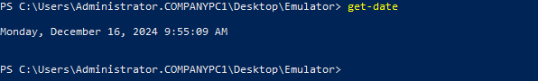

T1124.000.03 powershell Get-date 명령어를 이용한 시스템 시간 정보 확인
D3FEND
MITRE ATT&CK 액션을 기준으로 대응 방안을 작성
Detection
파워쉘(Powershell)을 이용하여 시스템 시간 정보 확인 행위를 파악합니다.
Detection(EDR)

https://172.18.10.125:8903/#/analysis/incident/67aad02b002dc6cc00000372
Response
시스템 시간 조회와 관련된 로그와 데이터를 수집하여, 공격자의 의도와 추가적인 악성 활동 여부를 파악합니다.
Mitigations
1. 시스템 시간 관리 강화
- 시간 동기화 시스템을 사용하여 모든 시스템의 시간이 정확하게 유지되도록 합니다. 이를 위해 NTP(Network Time Protocol) 또는 다른 중앙 서버와 동기화하여 시간 변경을 방지합니다.
- 시간 서버에 대한 접근을 제한하여 시스템에서 독립적으로 시간 설정을 변경할 수 없도록 합니다.
- 시간 변경 로그를 활성화하여 시스템 시간이 변경되었을 때 이를 기록하고 모니터링합니다.
2. 로그 및 이벤트 모니터링
- 로그 파일의 무결성을 확인하고, 시스템 시간 변경에 대한 이벤트가 기록되도록 설정합니다.
- SIEM(Security Information and Event Management) 시스템을 통해 시스템 시간 변경이나 비정상적인 시간 관련 이벤트를 실시간으로 모니터링하고 경고를 발송합니다.
- 로그 타임스탬프를 기준으로 발생한 사건들이 일관되게 기록되도록 하여, 시간 변경이나 조작이 발생한 경우 이를 식별할 수 있도록 합니다.
3. 관리자 권한 및 접근 제어
- 최소 권한 원칙(Least Privilege) 을 적용하여 시스템 시간 변경에 대한 접근을 최소화하고, 오직 관리자가 변경할 수 있도록 제한합니다.
- 시간 변경 권한을 가진 계정에 대해 강력한 인증 및 모니터링을 설정하여 불법적인 시간 변경을 방지합니다.
4. 자동화된 보안 도구 사용
- 자동화된 보안 도구를 활용하여 시스템 시간이나 로그 파일에서 일관되지 않은 시간 패턴을 자동으로 감지하고 경고를 발송할 수 있도록 합니다.
- 파일 무결성 모니터링(FIM) 도구를 사용하여 로그 파일이 변경되었을 때 이를 감지하고 알림을 제공합니다.
5. 사용자 교육 및 보안 인식 제고
- 보안 인식 교육을 통해 사용자들에게 시스템 시간 변경의 위험성에 대해 알리고, 이를 악용한 공격에 대비할 수 있도록 합니다.
- 피싱 공격 및 사회 공학적 방법을 통해 시스템 시간 조작 시도에 대해 사용자가 인지하고 의심할 수 있도록 훈련합니다.
Affected Techniques
Action 실행시 함께 영향을 받는 다른 Techniqes
|D3FEND|
|:-----------:|